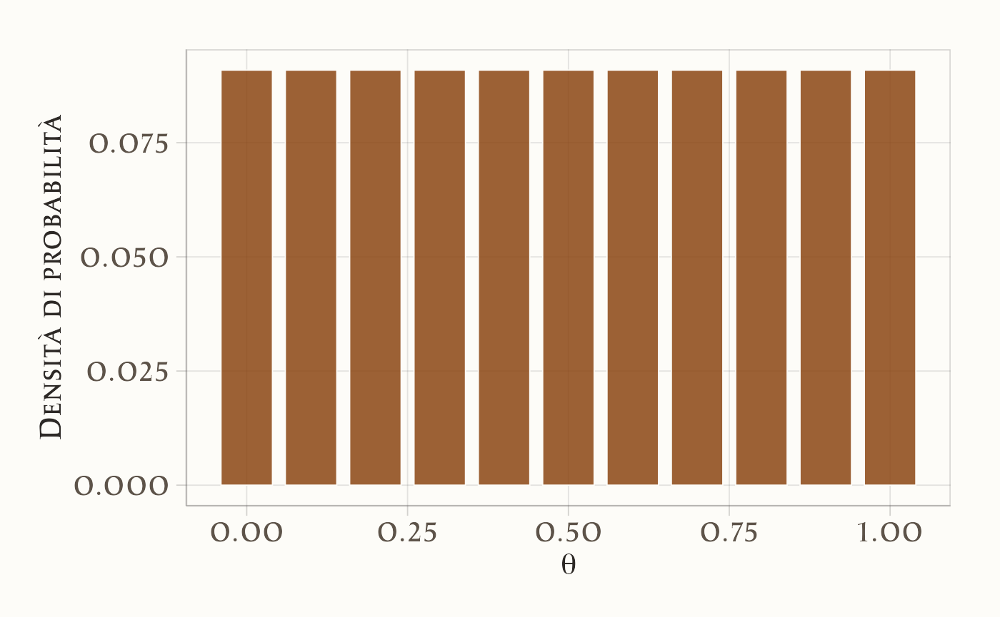
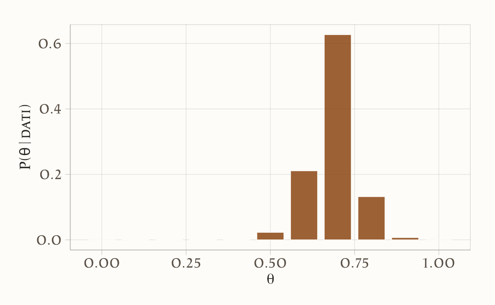
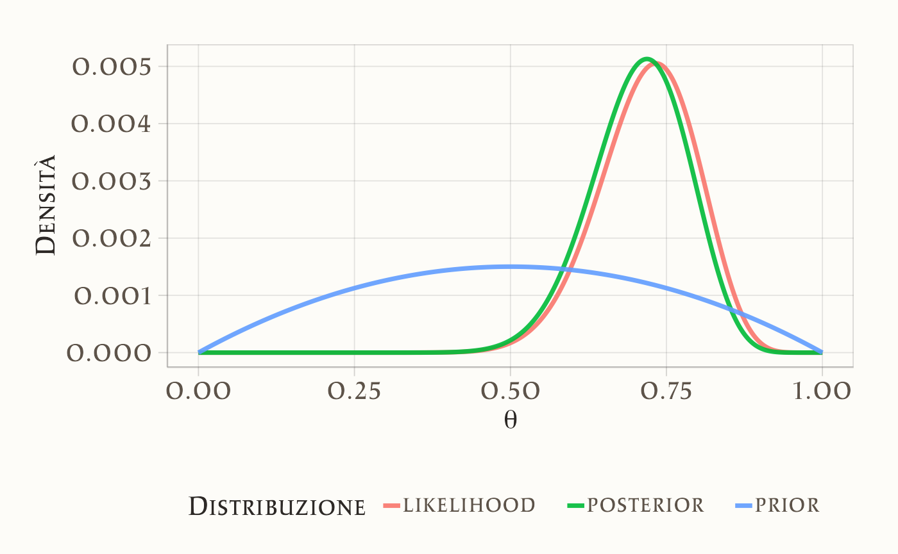
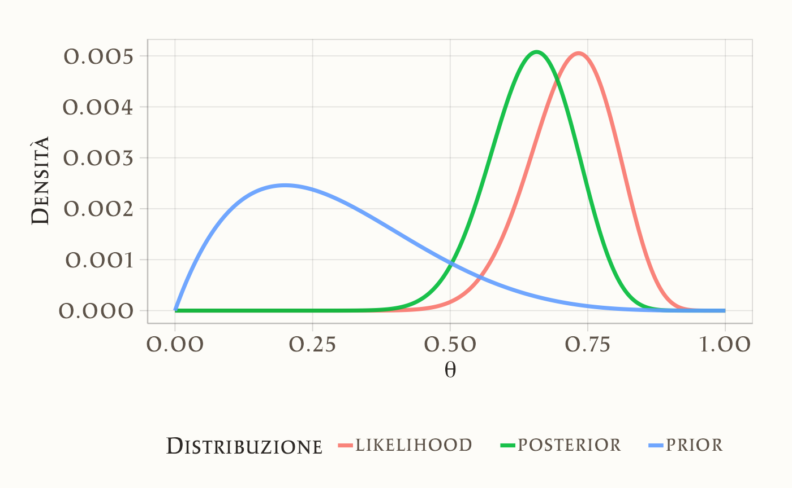
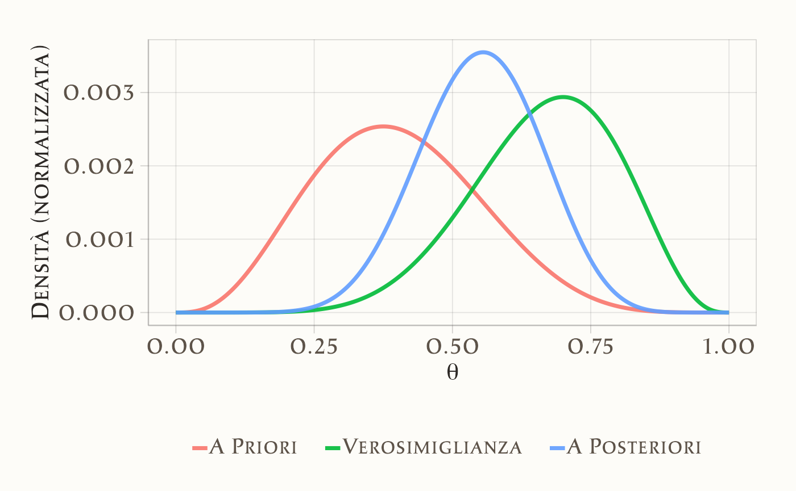

here::here("code", "_common.R") |>
source()
# Load packages
if (!requireNamespace("pacman")) install.packages("pacman")
pacman::p_load(HDInterval)6 Aggiornare le credenze su un parametro: dal prior alla posterior
“The probability of any event is the ratio between the value at which an expectation depending on the happening of the event ought to be computed, and the value of the thing expected upon its happening.”
— Thomas Bayes, An Essay towards Solving a Problem in the Doctrine of Chances
Introduzione
Nei capitoli precedenti abbiamo esaminato il ruolo fondamentale dell’incertezza nella ricerca psicologica e abbiamo visto come l’approccio bayesiano fornisca un linguaggio particolarmente adatto per rappresentarla. Abbiamo inoltre distinto tra modelli puramente fenomenologici, che si limitano a descrivere associazioni tra variabili, e modelli meccanicistici, che cercano invece di formalizzare i processi psicologici sottostanti.
In questo capitolo ci concentreremo su un caso di studio particolarmente comune e rilevante: l’inferenza sulla proporzione di successi in un compito sperimentale o in un campione di soggetti.
6.0.1 Perché partire dalle proporzioni?
Una parte significativa della ricerca psicologica si basa su dati di natura binaria: un soggetto che ricorda o non ricorda uno stimolo, un paziente che risponde o non risponde a una terapia, uno studente che sceglie o non sceglie l’opzione corretta in un compito cognitivo.
In tutti questi scenari, i dati si riducono essenzialmente a un conteggio di successi e insuccessi, e la quantità di interesse principale diventa la proporzione di successi nella popolazione o nel campione studiato.
L’analisi di questo caso apparentemente semplice ci offre tre vantaggi fondamentali: in primo luogo, ci permette di stabilire un collegamento chiaro tra dati osservati e modelli probabilistici; in secondo luogo, ci aiuta a comprendere come i priori e i posteriori operano concretamente nel contesto di un modello Beta-Binomiale; infine, getta le basi per modelli più complessi che in seguito potranno descrivere non solo proporzioni statiche, ma veri e propri processi psicologici dinamici che generano le osservazioni.
6.0.2 Collegamento con la crisi di replicazione
Molti dei risultati controversi emersi in psicologia derivano da studi che confrontavano proporzioni tra diversi gruppi sperimentali - si pensi ad esempio alla percentuale di partecipanti che mostrano un certo effetto. Una delle criticità principali di questi studi è stata la tendenza a presentare queste proporzioni come stime puntuali, tralasciando una adeguata rappresentazione dell’incertezza associata.
L’approccio bayesiano supera questa limitazione consentendo di comunicare non solo quale sia la proporzione più plausibile, ma anche quanto dubbio residuo permanga attorno a questa stima. Questa trasparenza favorisce interpretazioni più equilibrate e cumulative dei risultati, contribuendo così ad affrontare uno dei fattori che hanno alimentato la crisi di replicabilità nel campo.
Panoramica del capitolo
- Applicare l’aggiornamento bayesiano per affinare credenze.
- Rappresentare distribuzioni a priori (discrete e continue).
- Calcolare la verosimiglianza e aggiornare la distribuzione a priori.
- Derivare e interpretare la distribuzione a posteriori.
- Usare il metodo a griglia per approssimare la distribuzione a posteriori.
- Applicare il modello binomiale per stimare probabilità e incertezze.
- Calcolare medie, mode e intervalli di credibilità.
- Utilizzare la distribuzione Beta come prior continuo.
6.1 Verosimiglianza binomiale
Nei capitoli precedenti abbiamo visto che l’approccio bayesiano rappresenta l’incertezza con distribuzioni di probabilità. Ora possiamo tradurre questa idea in un caso concreto molto comune nella ricerca psicologica: quando osserviamo una sequenza di successi e insuccessi. Questo tipo di dati non è raro: pensiamo a uno studente che risponde a una serie di domande (corretto/errato), a un paziente che mostra o non mostra un miglioramento, a un partecipante che sceglie o non sceglie un certo stimolo. In questi casi, la distribuzione che descrive le probabilità dei possibili conteggi di successi si chiama distribuzione binomiale. Essa rappresenta il cuore del modello fenomenologico più semplice per i dati binari: il modello binomiale.
La distribuzione binomiale descrive il numero di successi \(y\) in \(n\) prove indipendenti, ciascuna con probabilità di successo \(\theta\):
\[ p(y \mid \theta) = \text{Bin}(y \mid n, \theta) = \binom{n}{y} \theta^y (1 - \theta)^{n-y}, \]
dove \(\theta\) rappresenta la probabilità di successo per singola prova, \(y\) è il numero osservato di successi e \(n\) è il numero totale di prove (fissato a priori).
6.2 Esempio psicologico: giudizio morale in un dilemma
I dilemmi morali, come il classico problema del treno (Foot, 1967; Greene et al., 2001), sono strumenti usati in psicologia per indagare come le persone prendono decisioni etiche (per es., Bucciarelli et al., 2008). Supponiamo che un ricercatore voglia stimare la proporzione di adulti che considerano accettabile compiere un’azione moralmente controversa (ad es. deviare un treno per salvare cinque persone, causando però la morte di una persona).
Ogni partecipante legge un singolo scenario morale e deve dare una risposta binaria:
- 1 = giudica l’azione come moralmente accettabile (successo),
- 0 = giudica l’azione come non accettabile (fallimento).
In un campione di 30 soggetti indipendenti, 22 hanno giudicato l’azione accettabile.
In questo scenario:
- ciascun soggetto fornisce un unico giudizio (unità di osservazione indipendente),
- ogni risposta è una variabile di Bernoulli con probabilità di successo \(\theta\),
- il numero totale di giudizi favorevoli segue una distribuzione binomiale:
\[ Y \sim \text{Binomiale}(n = 30, \theta), \]
dove \(Y = 22\) rappresenta il numero di successi osservati.
6.2.1 Obiettivo inferenziale
Il nostro scopo è stimare \(\theta\): la probabilità che un adulto, scelto a caso dalla popolazione, giudichi moralmente accettabile l’azione descritta nel dilemma. Nel quadro bayesiano combiniamo:
- la verosimiglianza (dati osservati: 22 su 30),
- una distribuzione a priori (credenze iniziali su \(\theta\)),
ottenendo la distribuzione a posteriori, che rappresenta la nostra conoscenza aggiornata.
6.3 Metodo basato su griglia
Il metodo basato su griglia è un approccio intuitivo e didatticamente efficace per approssimare una distribuzione a posteriori. La sua semplicità lo rende ideale per comprendere il meccanismo di aggiornamento delle credenze. L’idea fondamentale è di discretizzare lo spazio dei parametri e calcolare la distribuzione a posteriori in punti isolati, evitando il ricorso a metodi analitici complessi.
I passaggi operativi sono i seguenti:
- Definizione della griglia: Si suddivide l’intervallo dei valori plausibili per il parametro di interesse (ad esempio, \(\theta\), compreso tra 0 e 1) in una sequenza finita di punti equidistanti.
- Calcolo della verosimiglianza: Per ogni punto \(\theta_i\) sulla griglia, si calcola la funzione di verosimiglianza \(P(D \mid \theta_i)\), che rappresenta la probabilità di osservare i dati \(D\) dato quel specifico valore del parametro.
- Prodotto priori-verosimiglianze: Per ogni punto della griglia, si moltiplica il valore della verosimiglianza per il valore della distribuzione a priori \(P(\theta_i)\). Questo prodotto è proporzionale alla distribuzione a posteriori non normalizzata.
- Normalizzazione: I valori ottenuti nel passo precedente vengono sommati e ciascuno di essi è diviso per questa somma totale. Il risultato è una distribuzione di probabilità discreta a posteriori valida, i cui valori per ogni \(\theta_i\) sommano a 1.
Il risultato finale è un’approssimazione della vera distribuzione a posteriori continua, che mostra in modo chiaro come l’evidenza fornita dai dati (\(D\)) abbia aggiornato e modificato le credenze iniziali (la distribuzione a priori) sul parametro \(\theta\).
6.4 Aggiornamento bayesiano con una distribuzione a priori discreta
6.4.1 Costruzione della distribuzione a priori
In assenza di informazioni specifiche, possiamo assumere che tutti i valori di \(\theta\) siano ugualmente plausibili. Per implementare concretamente questo approccio:
- definiamo un insieme discreto di valori possibili per \(\theta\): {0, 0.1, 0.2, …, 1},
- assegniamo a ciascun valore la stessa probabilità a priori: \(p(\theta) = 1/11 \approx 0.09\).
Questa scelta rappresenta uno stato di massima incertezza iniziale, dove nessun valore di \(\theta\) risulta a priori più plausibile di altri.
6.4.2 Aggiornamento con i dati
Abbiamo osservato \(y = 22\) giudizi di accettabilità su \(n = 30\) partecipanti. Per ogni valore \(\theta\) nella griglia:
-
calcoliamo la verosimiglianza binomiale:
\[ p(y \mid \theta) = \theta^{22}(1-\theta)^8 , \]
dove \(\theta\) rappresenta la probabilità che un adulto giudichi l’azione come moralmente accettabile,
moltiplichiamo per la probabilità a priori,
normalizziamo dividendo per la somma totale di tutti i prodotti ottenuti.
Il risultato è una distribuzione a posteriori discreta che mostra come l’osservazione aggiorna le nostre credenze iniziali. I valori di \(\theta\) vicini a \(22/30 \approx 0.7\) ricevono una maggiore probabilità a posteriori.
6.4.3 Interpretazione
- Prima dei dati, ogni valore di \(\theta\) era ugualmente plausibile.
- Dopo i dati, valori come \(\theta = 0.7\) o \(0.75\) hanno alta probabilità a posteriori.
- Valori estremi (\(0.2\), \(0.9\)) diventano poco plausibili.
In altre parole, la distribuzione a posteriori concentra la massa di probabilità attorno ai valori che rendono i dati osservati più plausibili.
6.4.4 Implementazione in R
Definizione della griglia:
theta <- seq(0, 1, by = 0.1) # Griglia di valori da 0 a 1 con passo 0.1Quando non abbiamo informazioni preliminari, usiamo una distribuzione uniforme:
Visualizziamo questa distribuzione:
ggplot(data.frame(theta, prob = priori_unif), aes(x = theta, y = prob)) +
geom_col(width = 0.08) +
labs(x = expression(theta),
y = "Densità di probabilità")
Se invece riteniamo più probabili valori centrali di \(\theta\):
priori_inf <- c(
0, 0.05, 0.05, 0.05, 0.175, 0.175, 0.175, 0.175, 0.05, 0.05, 0.05
)Visualizzazione:
ggplot(data.frame(theta, prob = priori_inf), aes(x = theta, y = prob)) +
geom_col(width = 0.08) +
labs(x = expression(theta),
y = "Densità di probabilità")
Verosimiglianza:
verosimiglianza <- dbinom(22, size = 30, prob = theta)Visualizzazione:
ggplot(data.frame(theta, prob = verosimiglianza), aes(x = theta, y = prob)) +
geom_col(width = 0.08) +
labs(x = expression(theta),
y = "L(θ|dati)")
Calcolo della distribuzione a posteriori:
posteriori_non_norm <- priori_inf * verosimiglianza
posteriori <- posteriori_non_norm / sum(posteriori_non_norm) # NormalizzazioneVisualizzazione:
ggplot(data.frame(theta, prob = posteriori), aes(x = theta, y = prob)) +
geom_col(width = 0.08) +
labs(x = expression(theta),
y = "P(θ|dati)")
Statistiche descrittive:
media_post <- sum(theta * posteriori)
var_post <- sum(theta^2 * posteriori) - media_post^2
moda_post <- theta[which.max(posteriori)]
cat("Media a posteriori:", round(media_post, 3),
"\nVarianza a posteriori:", round(var_post, 3),
"\nModa a posteriori:", moda_post)
#> Media a posteriori: 0.689
#> Varianza a posteriori: 0.005
#> Moda a posteriori: 0.7Interpretazione grafici. Il grafico della verosimiglianza mostra un picco tra 0.6 e 0.8: significa che questi valori di \(\theta\) rendono i dati osservati particolarmente plausibili. La combinazione con il prior porta la curva a posteriori ad accentuare o attenuare questa evidenza, a seconda della distribuzione iniziale.
6.5 Aggiornamento bayesiano con una distribuzione a priori continua
Un’estensione naturale è usare una distribuzione continua come priori. La più adatta nel caso di proporzioni è la Beta:
- supporto: \(\[0,1]\) (come \(\theta\)),
- coniugata della Binomiale (la posteriori è ancora una Beta),
- parametri: \(\text{Beta}(\alpha, \beta)\).
Esempi:
- \(\text{Beta}(2,2)\): priori simmetrica e non troppo informativa,
- \(\text{Beta}(2,5)\): priori che privilegia valori bassi di \(\theta\).
6.5.1 Implementazione in R
Calcoliamo la densità della distribuzione \(\text{Beta}(2, 2)\) su una griglia fine di valori di \(\theta\):
Visualizzazione:
ggplot(data.frame(theta, prior = prior_beta_2_2), aes(x = theta, y = prior)) +
geom_line(linewidth = 1.2, color = "#5d5349") +
labs(x = expression(theta), y = "Densità")
Continuiamo con l’esempio precedente, in cui 22 partecipanti su 30 hanno giudicato l’azione come moralmente accettabile. La verosimiglianza associata a ciascun valore di \(\theta\) è calcolata come:
likelihood <- dbinom(22, size = 30, prob = theta)Poiché il prior è continuo, otteniamo la distribuzione a posteriori moltiplicando punto a punto la densità a priori per la verosimiglianza, e normalizzando:
posterior_unnorm <- prior_beta_2_2 * likelihood
posterior <- posterior_unnorm / sum(posterior_unnorm)Visualizziamo le tre curve (per gli scopi della visualizzazione, standardizziamo ciascuna distribuzione):
df <- data.frame(
theta,
prior = prior_beta_2_2 / sum(prior_beta_2_2),
likelihood = likelihood / sum(likelihood),
posterior
)
df_long <- df |>
pivot_longer(cols = c("prior", "likelihood", "posterior"),
names_to = "Distribuzione", values_to = "Densità")
ggplot(df_long, aes(x = theta, y = Densità, color = Distribuzione)) +
geom_line(size = 1.2) +
labs(x = expression(theta), y = "Densità") +
theme(legend.position = "bottom")
Ora consideriamo una distribuzione a priori non simmetrica, Beta(2, 5), per rappresentare credenze che privilegiano valori bassi di \(\theta\).
Visualizziamo le tre distribuzioni:
df <- data.frame(
theta,
prior = prior_2_5 / sum(prior_2_5),
likelihood = likelihood / sum(likelihood),
posterior
)
df_long <- df |>
pivot_longer(cols = c("prior", "likelihood", "posterior"),
names_to = "Distribuzione", values_to = "Densità")
ggplot(df_long, aes(x = theta, y = Densità, color = Distribuzione)) +
geom_line(size = 1.2) +
labs(x = expression(theta), y = "Densità") +
theme(legend.position = "bottom")
Interpretazione. L’aggiornamento bayesiano con una distribuzione a priori continua fornisce una stima aggiornata di \(\theta\), la probabilità che un adulto giudichi moralmente accettabile l’azione proposta nel dilemma. Questa stima tiene conto sia delle credenze iniziali (prior) sia dell’evidenza empirica (verosimiglianza).
Nel nostro esempio, la distribuzione a posteriori risulta spostata verso valori alti rispetto al prior simmetrico \(\text{Beta}(2,2)\), riflettendo l’evidenza che 22 partecipanti su 30 hanno espresso un giudizio di accettabilità. In alternativa, utilizzando un prior asimmetrico come \(\text{Beta}(2,5)\), la distribuzione a posteriori mostra un compromesso: da un lato la tendenza iniziale a ritenere poco probabile l’accettazione morale, dall’altro i dati osservati che indicano una proporzione maggiore di giudizi favorevoli.
Sintesi didattica. Questo esempio illustra il cuore dell’inferenza bayesiana: la conoscenza non è mai statica, ma si aggiorna continuamente integrando dati empirici e credenze iniziali in modo trasparente e quantitativo.
Riflessioni conclusive
In questo capitolo abbiamo affrontato uno dei casi più fondamentali dell’inferenza statistica: la stima della proporzione di successi. Attraverso la combinazione della verosimiglianza binomiale con un prior Beta, abbiamo visto come il teorema di Bayes ci consenta di ottenere una distribuzione a posteriori che rappresenta in maniera trasparente la nostra incertezza riguardo al parametro di interesse. Questo esempio, per quanto elementare, ci permette di osservare in azione la logica dell’aggiornamento bayesiano presentata nei capitoli precedenti: ciò che sapevamo prima viene modificato dalla nuova evidenza empirica, producendo credenze aggiornate che incorporano tanto le informazioni pregresse quanto i dati osservati.
Questa applicazione mette in luce un punto centrale che ha accompagnato tutta la nostra discussione fino a qui: l’incertezza non è un ostacolo da eliminare, ma una componente intrinseca e inevitabile dell’inferenza scientifica. Al contrario di quanto avviene in molti approcci tradizionali, dove il risultato viene spesso ridotto a un singolo numero o a un verdetto dicotomico, il metodo bayesiano ci offre una rappresentazione più onesta e informativa, in cui diversi valori rimangono plausibili con gradi di sostegno differenti. La distinzione tra conoscenza preliminare (prior), evidenza empirica (dati) e credenze aggiornate (posterior) fornisce così un quadro concettuale coerente e cumulativo, che si integra con le riflessioni sviluppate nei capitoli precedenti sulla crisi di replicabilità e sulla necessità di modelli trasparenti e confrontabili.
Dal punto di vista computazionale, l’approccio basato su griglia che abbiamo utilizzato si è rivelato particolarmente utile come strumento didattico. La sua logica è semplice e intuitiva: si discretizza lo spazio dei parametri, si calcolano prior e verosimiglianza in ciascun punto e si normalizza per ottenere una distribuzione coerente di probabilità. Questa procedura esplicita, anche se rudimentale, permette di visualizzare con chiarezza i passaggi fondamentali dell’inferenza bayesiana e di comprenderne la natura dinamica. Tuttavia, sappiamo che la sua utilità pratica diminuisce rapidamente con l’aumentare della complessità dei modelli: la cosiddetta maledizione della dimensionalità1 rende presto insostenibile il calcolo.
Questa consapevolezza ci prepara ad affrontare, nei prossimi capitoli, strumenti più sofisticati come i metodi di campionamento MCMC. Essi sono concettualmente più complessi, ma offrono la potenza computazionale necessaria per affrontare modelli realistici e a più alta dimensionalità, mantenendo però intatta la logica di fondo che abbiamo visto emergere anche nel caso semplice del modello binomiale. In questo senso, il metodo a griglia conserva il suo valore formativo: è un punto di accesso privilegiato al pensiero bayesiano, un laboratorio concettuale in cui gli studenti possono osservare direttamente come si realizza l’aggiornamento delle credenze, prima di cimentarsi con strumenti più potenti e astratti.
Esercizio
In uno studio sulla percezione delle emozioni, un partecipante osserva 10 fotografie di volti arrabbiati. Deve indicare se il volto esprime rabbia o no. Ogni risposta può essere corretta (1) o errata (0).
I dati osservati del partecipante sono:
1, 0, 1, 1, 1, 0, 0, 1, 1, 1→ Totale: 7 successi su 10 prove → \(y = 7\), \(n = 10\).
Obiettivo: stimare la probabilità \(\theta\) che il partecipante riconosca correttamente un volto arrabbiato, tenendo conto sia dei dati osservati sia di conoscenze pregresse.
Prior Informativo.
Supponiamo di voler adottare un approccio cautamente pessimistico sulle capacità iniziali del partecipante, basandoci su studi precedenti che indicano un riconoscimento della rabbia non sempre accurato, ad esempio mediamente intorno al 40% con moderata incertezza.
Per rappresentare questa convinzione, scegliamo come distribuzione a priori una Beta(4, 6):
- Media: \(\mu = \frac{4}{4+6} = 0.4\)
- Varianza: \(\frac{4 \cdot 6}{(10)^2 \cdot 11} = 0.0218\)
Questa prior concentra la massa di probabilità su valori inferiori a 0.5, ma lascia spazio anche a livelli di competenza superiori.
Calcolo della Distribuzione a Posteriori con il Metodo Basato su Griglia.
1. Griglia di valori per \(\theta\).
2. Calcolo della distribuzione a priori Beta(4, 6).
Visualizzazione:
ggplot(data.frame(theta, prior), aes(x = theta, y = prior)) +
geom_line(linewidth = 1.2) +
labs(
x = expression(theta),
y = "Densità (normalizzata)"
) +
theme_minimal(base_size = 14)
3. Calcolo della verosimiglianza per 7 successi su 10.
Visualizzazione:
ggplot(data.frame(theta, likelihood), aes(x = theta, y = likelihood)) +
geom_line(linewidth = 1.2) +
labs(
x = expression(theta),
y = "Densità (normalizzata)"
) +
theme_minimal(base_size = 14)
4. Calcolo della distribuzione a posteriori.
unnormalized_posterior <- prior * likelihood
posterior <- unnormalized_posterior / sum(unnormalized_posterior)5. Visualizzazione congiunta: prior, likelihood e posteriori.
data <- data.frame(theta, prior, likelihood, posterior)
# Imposta i livelli desiderati con nomi leggibili
long_data <- pivot_longer(
data,
cols = c("prior", "likelihood", "posterior"),
names_to = "distribution",
values_to = "density"
) |>
mutate(distribution = factor(
distribution,
levels = c("prior", "likelihood", "posterior"),
labels = c("A Priori", "Verosimiglianza", "A Posteriori")
)
)
ggplot(
long_data,
aes(x = theta, y = density, color = distribution)
) +
geom_line(linewidth = 1.2) +
labs(
x = expression(theta),
y = "Densità (normalizzata)",
color = NULL
) +
theme(legend.position = "bottom")
Riepilogo:
- la prior (Beta(4,6)) riflette una convinzione iniziale più scettica;
- la verosimiglianza è centrata su \(\theta = 0.7\), corrispondente a 7 successi su 10;
- la posteriori media tra prior e dati, ma si sposta chiaramente verso destra, evidenziando l’effetto aggiornamento bayesiano.
Questo esempio mostra come l’approccio bayesiano:
- integra in modo trasparente dati individuali e credenze pregresse;
- produce una stima personalizzata della capacità del partecipante;
- permette di quantificare l’incertezza in modo completo, tramite la distribuzione a posteriori.
Quantità a Posteriori.
Media:
posterior_mean <- sum(theta * posterior)
posterior_mean
#> [1] 0.55Deviazione standard:
Moda:
posterior_mode <- theta[which.max(posterior)]
posterior_mode
#> [1] 0.556Intervallo di credibilità al 94%:
Questo esercizio mostra come:
- l’informazione pregressa può essere incorporata in modo trasparente in un modello bayesiano;
- la posteriori riflette una combinazione tra dati osservati e conoscenze precedenti.
Bibliografia
Albert, J., & Hu, J. (2019). Probability and Bayesian Modeling. CRC Press.
Bucciarelli, M., Khemlani, S., & Johnson-Laird, P. N. (2008). The psychology of moral reasoning. Judgment and Decision making, 3(2), 121–139.
Foot, P. (1967). The problem of abortion and the doctrine of the double effect. Oxford Review, 5, 5–15.
Greene, J. D., Sommerville, R. B., Nystrom, L. E., Darley, J. M., & Cohen, J. D. (2001). An fMRI investigation of emotional engagement in moral judgment. Science, 293(5537), 2105–2108.
Hardwicke, T. E., Thibault, R. T., Kosie, J. E., Wallach, J. D., Kidwell, M. C., & Ioannidis, J. P. (2022). Estimating the prevalence of transparency and reproducibility-related research practices in psychology (2014–2017). Perspectives on Psychological Science, 17(1), 239–251.
La maledizione della dimensionalità si riferisce al fatto che lo spazio dei parametri cresce in modo esponenziale con il numero delle dimensioni. Se, ad esempio, dividiamo ogni parametro in 100 possibili valori e vogliamo esplorare un modello con 10 parametri, dovremmo valutare \(100^{10} = 10^{20}\) combinazioni: un numero astronomico, impossibile da gestire con un approccio esaustivo a griglia. Questo rende necessarie tecniche di campionamento più efficienti, come i metodi Monte Carlo che introdurremo nei capitoli successivi.↩︎